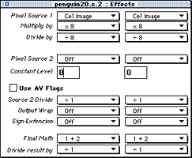
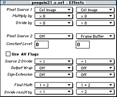
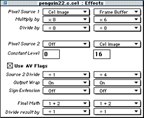
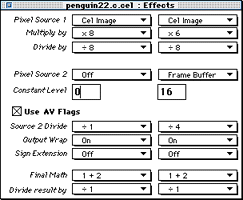

The Effects editor allows you to modify the PIXC settings of a cel.
Modifying PIXC settings adjusts special effects in a cel, such as
translucency. The changes you make in the Effects editor are shown
immediately on the Workbench and on the television monitor. For background
information on P-Mode and PIXC settings, see Introduction to 3DO
Graphics.
This section shows you how to edit a cel's display characteristics using
the Effects editor. It provides an example for settings that achieve 50
percent translucency for a cel.
After the walk-through instructions, examples of settings to achieve 25
percent and 75 percent translucency for a cel are also given.
To change the effects of a cel to 50 percent translucency, follow these
steps:
Launch 3DO PostPro.
From the File menu, select Open. Select the cel you want to work with
from the Open dialog. The Document Window appears (see Figure 1)
Figure 1: Document window for an opened coded-6 cel.
Drag the Document Proxy onto the Workbench. The cel appears on the Workbench and television display monitor.
Double-click on the Effects category listing in the Document window. The Effects editor is displayed with default PIXC settings (see Figure
2).

Figure 2: Effects editor with default settings.
Change the effects using the options on the pulldown menus. As you change settings, the results are shown immediately on the
Workbench and the television display monitor.
The effects settings shown in Figure 3 change the cel to 50 percent
translucency.

Figure 3: Effects editor settings for 50 percent
translucency.
When you are satisfied with your changes, save the file. From the File
menu choose Save, to save under the same name as the original cel, or Save
As to save it under a new name.
Figure 4 and Figure 5 show settings for 25 percent translucency and 75
percent translucency for a cel, respectively. These examples give you a
basis to work from when specifying settings for the effects you want for
your cels.

Figure 4: Effects editor settings for 25 percent
translucency.

Figure 5: Effects editor settings for 75 percent
translucency.